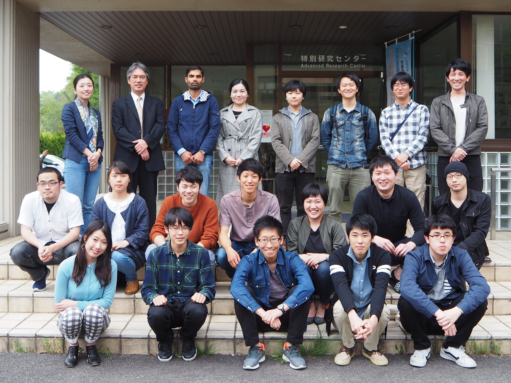
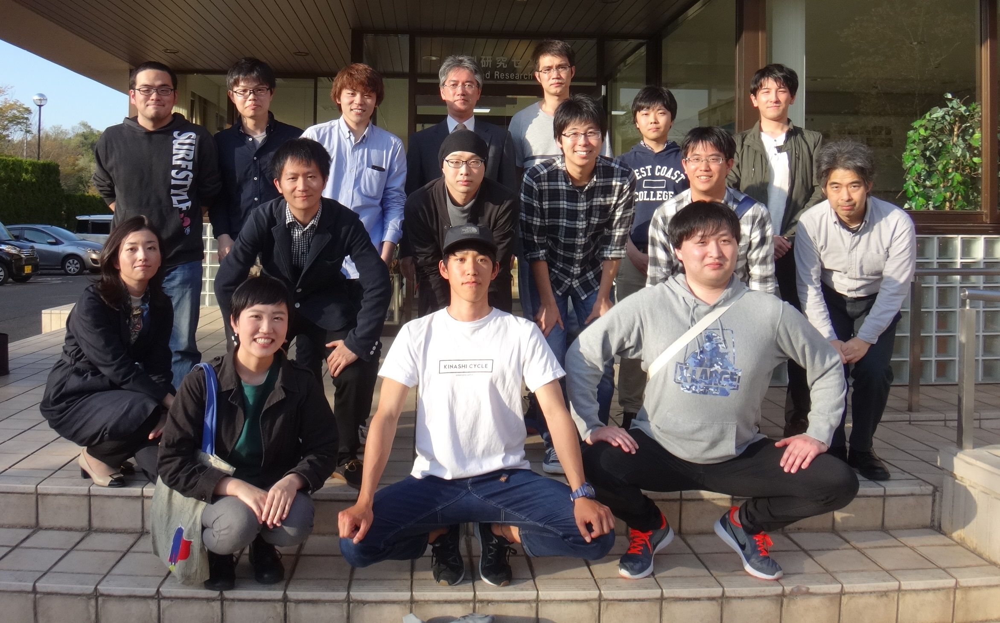
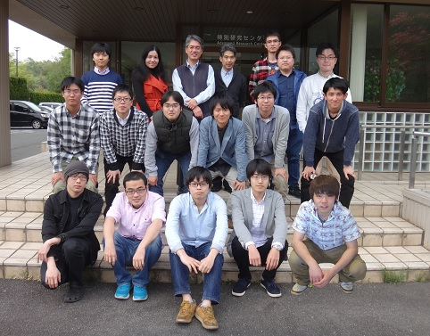
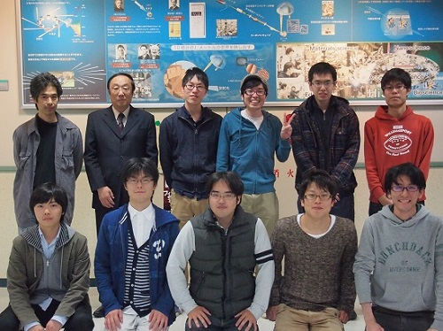
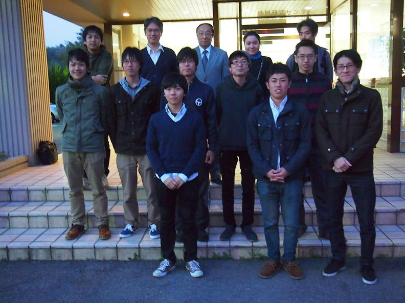
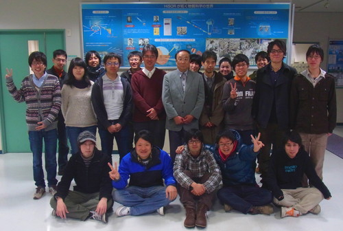

2018 年度のニュース
- 2018 年 4 月 23 日
本研究室の井野明洋特任准教授が栄転しました。
- 2018 年 4 月 4 日
光物性研究室と放射光物性・物理研究室合同でお花見・親睦会を行いました。close
- 2018 年 3 月 23 日
卒業式が行われました。
- 2018 年 3 月 22 日 - 25 日
日本物理学会に角田一樹(D2)、市川典万(M1)、鹿子木将明(B4)が参加し、最新の研究成果を発表しました。またこの学会で、角田一樹(D2)が学生ポスター優秀賞を受賞しました！
- 2018 年 3 月 8 日 - 9 日
The 22nd Hiroshima International Symposium on Synchrotron Radiationに角田一樹(D2)、宮下剛夫(M2)、石坂仁志(M1)、市川典万(M1)、鹿子木将明(B4)が参加し発表を行いました。
- 2018 年 3 月 5 日 - 6 日
The 1st International Workshop on Emergent Condensed Matter Physics (ECMP2018)に木村昭夫教授、角田一樹(D2)、鹿子木将明(B4)が参加し発表を行いました。またこの学会で角田がBest Student Poster Awardを受賞しました！。
- 2018 年 2 月 15 日
修士論文発表会が行われました。
- 2018 年 2 月 13 日
卒業論文発表会が行われました。
- 2017 年 12 月 19 日
本研究室D2の角田一樹が平成29年度広島大学エクセレント・スチューデント・スカラシップ対象学生に選ばれ表彰されました！ 平成27年度に続き、2度目の受賞となります。[受賞時の写真]
- 2017 年 11 月 2 日 - 4 日
2017 Japan-Korea Student Workshopに参加し発表を行いました。また、この学会で石坂仁志(M1)がExcellent Presentation Awardを受賞しました！〔広島大学の広報〕
- 2017 年 10 月 26 日
当研究室の角田一樹（D2）を中心とした研究成果「トポロジカル絶縁体に付与した光情報の持続時間を飛躍的に長くすることに成功」について広島大学からプレス発表されました。〔広島大学の広報〕
- 2017 年 10 月 26 日
トポロジカル絶縁体の非平衡キャリアダイナミクスに関する研究がScientific Reportsに掲載されました！ K. Sumida
et al ., Sci. Rep. 7, 14080 (2017).
- 2017 年 10 月 19 日
- 2017年 9 月 21 日 - 24 日
日本物理学会に田北仁志(D2)、角田一樹(D2)、後藤一希(M2)、吉川智己(M2)、宮下剛夫(M2)、市川典万(M1)、檜垣聡太(M1)、松田旭央(M1)が参加し、最新の研究成果を発表しました。またこの学会で、角田一樹(D2)が領域5学生ポスター優秀賞を受賞しました！
- 2017 年 9 月 15 日 - 16 日
ゼミ旅行に行きました。
- 2017 年 7 月 19 日
日経産業新聞の朝刊に、記事「格子振動で高温超電導 広島大、仕組みの一端解明」が掲載されました。
- 2017 年 7 月 7 日
中國新聞の朝刊に、記事「高温超電導「格子振動」が鍵 広島大で証拠観測 論争に一石」が掲載されました。
- 2017 年 7 月 6 日
当研究室の 井野明洋 特任准教授と、大阪府立大学大学の 安齋太陽 助教 （当研究室 OB）が、研究成果「高温超伝導の立役者、決定的証拠を観測」についてプレス・リリースを行いました 〔広島大学の広報、放射光科学研究センターの成果解説〕。
- 2017 年 7 月 2 日 - 7 日
The 17th International workshop on strong correlations and angle-resolved photoemission spectroscopy (CORPES17)に田北仁志(D2)、角田一樹(D2)、Umut Mansur(D1)、後藤一希(M2)、宮下剛夫(M2)、石坂仁志(M1)が参加し発表を行いました。
- 2017 年 6 月 4 日
- 2017 年 4 月 24 日
光物性研究室と放射光物性・物理研究室合同で新人歓迎会を行いました。
- 2017 年 4 月 6 日
- 2017 年 4 月 1 日
新４年生が配属されました！close
- 2017 年 3 月 23 日
- 2017 年 3 月 17 日 - 20 日
日本物理学会にChen(D3)、角田(D1)、吉川(M1)が参加し、最新の研究成果を発表しました。
- 2017 年 3 月 2 日 - 3 日
The 21st Hiroshima International Symposium on Synchrotron Radiationに田北仁志(D1)、Umut Mansur(D1)、後藤一希(M1)、宮下剛夫(M1)、市川典万(B4)、檜垣聡太(B4)が参加し発表を行いました。また、この学会で田北仁志(D1)と後藤一希(M1)がBest Student Poster Awardを受賞しました！
- 2017年 2 月 14 日 - １5 日
修論発表会が行われました。
- 2017年 2 月 13 日
卒論発表会が行われました。
- 2017年 1 月 24 日 - 25 日
Symposium on Surface Science & Nanotechnology -25th Anniversary of SSSJ Kansai-に角田一樹(D1)、吉川智己(M1)が参加し、研究成果を発表しました。 また、この国際シンポジウムで角田一樹(D1)がYoung Researcher Awardを受賞しました！
- 2017年 1 月 7 日 - 9 日
日本放射光学会に角田一樹(D1)が参加し、研究成果を発表しました。
- 2016年 12 月 19 日
光物性研究室と放射光物性・物理研究室合同で忘年会を行いました。
- 2016 年 11 月 24 日 - 26 日
2016 Japan-Korea Student Workshopに参加し発表を行いました。また、この学会で後藤一希(M1)がExcellent Presentation Awardを受賞しました！
- 2016年 11 月 1 日
真木祥千子助教が赴任されました！
- 2016年 10 月 1 日
研究室に新メンバーが加わりました！
- 2016年 9 月 27 日 - 30 日
BEC2016に木村教授、角田(D1)、吉川(M1)が参加し、研究成果を発表しました。
- 2016年 9 月 20 日 - 21 日
ゼミ旅行に行きました。
- 2016年 9 月 13 日 - 16 日
日本物理学会に参加し、研究成果を発表しました。
- 2016年 9 月 5 日 - 9 日
ICFMSA'16に木村教授、Chen(D3)が参加し、研究成果を発表しました。
- 2016年 7 月 3 日 - 8 日
VUVX2016に角田一樹(D1)が参加し、研究成果を発表しました。
- 2016年 6 月 21 日 - 24 日
EMN Prague meetingで角田一樹(D1)、田北仁志(D1)が招待講演を行いました。
- 2016年 4 月 25 日
- 2016年 4 月 6 日
- 2016年 4 月 1 日 close
- 2016年 3 月 23 日
角田一樹(M2)が理学研究科長賞を受賞しました！
- 2016年 3 月 23 日
吉川智己(B4)が卒業論文発表優秀賞を受賞しました！
- 2016年 3 月 23 日
平成27年度卒業式が行われました。
- 2016年 3 月 19 日 - 22 日
応用物理学会に参加し発表を行いました。
- 2016年 3 月 14 日 - 18 日
APS March Meeting 2016に参加し発表を行いました。
- 2016 年 3 月 10 日 - 11 日
The 20th Hiroshima International Symposium on Synchrotron Radiationに参加し発表を行いました。また、この学会で後藤一希(B4)がBest Student Poster Awardを受賞しました！
- 2016年 2 月 17 日
修士論文発表会が行われました。
- 2016年 2 月 12 日
卒業論文発表会が行われました。
- 2016年 1 月 27 日
谷口雅樹 特任教授の第72回中国文化賞受賞記念祝賀会が開催されました。
- 2016年 1 月 9 日 - 11 日
日本放射光学会に参加し発表を行いました。
- 2015年 12 月 24 日
本研究室M2の角田一樹が平成27年度広島大学エクセレント・スチューデント・スカラシップ対象学生に選ばれ表彰されました！
- 2015年 12 月 21 日
光物性研究室と放射光物性・物理研究室合同で忘年会を行いました。
- 2015年 11 月 30 日 - 12 月 3 日
- 2015年 11 月 27 日 - 28 日
表面・界面スペクトロスコピー2015で、角田一樹(M2)がStudent Prizeを受賞しました！
- 2015年 11 月 19 日
磁性トポロジカル絶縁体の強磁性発現機構を明らかにした研究成果がNature Communicationsに掲載されました！
プレスリリース(http://www.hiroshima-u.ac.jp/top/koho_press/press/h2701-12/p_xqbb87.html)
M. Yeet al ., Nat. Commun. 6, 8913 (2015).
- 2015年 11 月 15 日 - 20 日
第15回半導体界面形成に関する国際会議(ICFSI-15)に参加し発表を行いました。 またこの学会で、角田一樹(M2)がBest Student Poster Awardを受賞しました！
- 2015年 11 月 3 日
- 2015年 10 月 16 日
角田一樹(M2)の日本学術振興会特別研究員(DC1)への採用が内定しました。
- 2015年 9 月 16 日 - 19 日
- 2015年 9 月 1 日 - 4 日
EMN Spain meeting 2015で角田一樹(M2)が招待講演を行いました。
- 2015年 8 月 25 日
- 2015年 8 月 21 日
- 2015年 8 月 7 日 - 8 日
- 2015年 6 月 20 日
- 2015年 5 月 31 日
- 2015年 4 月 27 日
- 2015年 4 月 14 日
強磁性形状記憶合金のマルテンサイト機構に関する研究成果がPhysical Review B に掲載されました！
K. Sumidaet al ., Phys. Rev. B 91, 134417 (2015).
- 2015年 4 月 6 日
- 2015年 4 月 1 日 close
- 2015 年 3 月 23 日
- 2015 年 3 月 21 - 24 日
- 2015 年 3 月 5 日 - 6 日
- 2015 年 2 月 13 日 , 16 日
- 2015 年 2 月 12 日
- 2014年 10 月 1 日
光物性研究室 新メンバー
- 2014 年 9 月 16 日 - 9 月 17 日
- 2014 年 9 月 7 日 - 10 日
- 2014年 7 月 11 日 - 7 月 13 日
- 2014年 5 月 25 日
- 2014年 4 月 25 日
- 2014年 4 月 7 日
お花見close
- 2014 年 3 月 29 日
- 2014 年 3 月 27 - 30 日
- 2014 年 3 月 23 日
- 2014 年 2 月 17 日
- 2014 年 2 月 14 日
- 2014 年 2 月 12-13 日
- 2014年 1 月 16 日
TlBiSe2の最表面に関する論文 (K. Kuroda
et al., Phys. Rev. B 88, 245308 (2013). ) の STM 像が Physical Review B 誌の "Kaleidoscope" として選ばれ公式 HP 上に掲示されました。
http://prb.aps.org/kaleidoscope/prb/88/24/245308
- 2014年 1 月 10 日
広島大学放射光科学研究センターの宮本幸治助教（本研究室OB）が第18回日本放射光学会奨励賞を受賞しました。
- 2014年 1 月 10 日
- 2013年 12 月 24 日
本研究室 D3 の黒田健太が広島大学エクセレント・スチューデント・スカラシップ 対象学生に選ばれ表彰されました。
- 2013年 12 月 23 日
- 2013年 11 月 4 日 - 8 日
- 2013年 9 月 25 日 - 28 日
- 2013年 8 月 31 日 -9 月 1 日
- 2013年 8 月 26 日 - 29 日
- 2013年 7 月 28 日 - 8 月 2 日
- 2013年 5 月 12 日
- 2013年 4 月 26 日
- 2013年 4 月 8 日
- 2013年 3 月 26 日 - 29 日
- 2013年 3 月 23 日
- 2013年 2 月 28 日 3 月 1日
- 2013年 2 月 21 日
- 2013年 2 月 15 日
- 2013年 2 月 12 - 13 日
- 2013年 1 月 12 - 14 日
- 2013年 1 月 7 - 10 日 close
- 2012年 11 月 27 日
- 2012年 11 月 20 - 22 日
- 2012年 11 月 20 日
- 2012年 11 月 7 日
- 2012年 10 月 17 日
- 2012年 9 月 18 日 - 9 月 21 日
- 2012年 9 月 16 日 - 9 月 21 日
- 2012年 8 月 30 日 - 9 月 1 日
- 2012年 7 月 29 日 - 30日
- 2012年 6 月 10 日
- 2012年 5 月 16 日
- 2012年 4 月 16 日
- 2012年 4 月 6 日 close

2018.4.23 at HiSOR
2018.4.23 at HiSOR

2017.4.24 at HiSOR
2017.4.24 at HiSOR

2016.4.25 at HiSOR
2016.4.25 at HiSOR

2015.4.27 at HiSOR

2014.4.25 at HiSOR
2014.4.25 at HiSOR

2013.4.26 at HiSOR
2013.4.26 at HiSOR

2012.11.29 at HiSOR
2012.11.29 at HiSOR